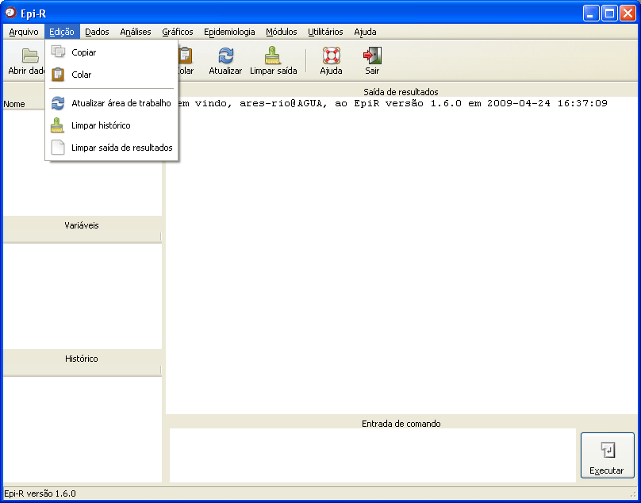

Menu
Edição
Menu
Edição

Figura 1. Janela principal do Epi-R destacando as opções do menu Edição.
Figura 1. Janela principal do Epi-R destacando as opções do menu Edição.
As opções desse menu
são:
Copiar
Essa opção copia um texto selecionado para que seja replicado em outro aplicativo ou em outro campo do Epi-R, por exemplo.
Para realizar a seleção do texto, mantenha o mouse clicado e arraste sobre o texto que será copiado. Em seguida, clique em Edição Copiar.
Copiar.
Colar
Essa opção cola um texto ou comando.
O usuário deve lembrar que para realizar a operação "colar", é necessário ter copiado o que se pretende colar, anteriormente.
Se desejar colar um comando na janela "Entrada de comando", por exemplo, clique com o mouse dentro da janela e posteriormente clique em Edição Colar.
Atualizar área de trabalho
Essa opção atualiza todos os campos da janela principal do Epi-R.
Limpar histórico
Todo comando (realizado com sucesso) utilizado durante uma sessão do Epi-R fica armazenado no campo "Histórico de comandos" da janela principal. Ao clicar em "Limpar histórico" no menu Edição, as linhas de comando serão deletadas e o campo aparecerá em branco. O usuário deve lembrar que, se desejar guardar essas linhas de comando em um arquivo separado, antes de limpar o histórico ele deve salvá-lo como arquivo de histórico ou como script.
Limpar saída de resultados
O resultado de todas as operações realizadas durante uma sessão do Epi-R é mostrado no campo "Saída de resultados" da janela principal. O comando "Limpar saída de resultados" deve ser utilizado quando o usuário deseja apagar o conteúdo dessa janela. É importante lembrar que, se esses resultados não tiverem sido previamente salvos, não haverá forma de recuperá-los, a menos que as análises sejam refeitas.
Com exceção à opção "Limpar histórico", todas as outras podem ser acessadas diretamente clicando nos ícones da barra de atalhos da janela principal.
Copiar
Essa opção copia um texto selecionado para que seja replicado em outro aplicativo ou em outro campo do Epi-R, por exemplo.
Para realizar a seleção do texto, mantenha o mouse clicado e arraste sobre o texto que será copiado. Em seguida, clique em Edição
Colar
Essa opção cola um texto ou comando.
O usuário deve lembrar que para realizar a operação "colar", é necessário ter copiado o que se pretende colar, anteriormente.
Se desejar colar um comando na janela "Entrada de comando", por exemplo, clique com o mouse dentro da janela e posteriormente clique em Edição
Atualizar área de trabalho
Essa opção atualiza todos os campos da janela principal do Epi-R.
Limpar histórico
Todo comando (realizado com sucesso) utilizado durante uma sessão do Epi-R fica armazenado no campo "Histórico de comandos" da janela principal. Ao clicar em "Limpar histórico" no menu Edição, as linhas de comando serão deletadas e o campo aparecerá em branco. O usuário deve lembrar que, se desejar guardar essas linhas de comando em um arquivo separado, antes de limpar o histórico ele deve salvá-lo como arquivo de histórico ou como script.
Limpar saída de resultados
O resultado de todas as operações realizadas durante uma sessão do Epi-R é mostrado no campo "Saída de resultados" da janela principal. O comando "Limpar saída de resultados" deve ser utilizado quando o usuário deseja apagar o conteúdo dessa janela. É importante lembrar que, se esses resultados não tiverem sido previamente salvos, não haverá forma de recuperá-los, a menos que as análises sejam refeitas.
Com exceção à opção "Limpar histórico", todas as outras podem ser acessadas diretamente clicando nos ícones da barra de atalhos da janela principal.